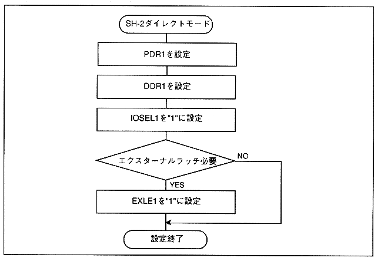

Figure 3.22 SH-2 direct mode setting example

When SH-2 direct mode and SMPC control mode are used together (example: port 1 = SH-2 direct mode, port 2 = SMPC control mode) 0 bytes for the port used in SH-2 direct mode when the INTBACK command is issued Use in mode.